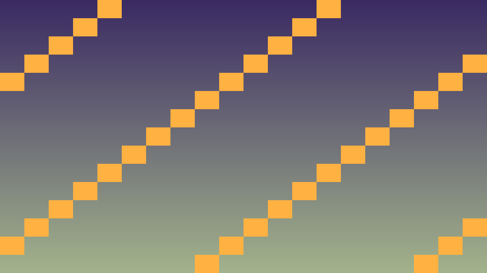

Tavs šīs stundas izaicinājums: Apgūt Godot signal sistēmu objektu komunikācijai.
Godot signāli ir veids, kā objekti var sazināties bez tieša savienojuma. Viens objekts emit (raida) signālu, citi connect (pievienojas), lai uz to reaģētu.
// Klases definīcijā ar signal
class Hero : public Node {
GDCLASS(Hero, Node)
protected:
static void _bind_methods() {
ClassDB::bind_method(...);
// Reģistrē signal
ADD_SIGNAL(MethodInfo("died", PropertyInfo(Variant::STRING, "name")));
ADD_SIGNAL(MethodInfo("damaged", PropertyInfo(Variant::INT, "amount")));
}
public:
void take_damage(int amount) {
hp -= amount;
emit_signal("damaged", amount);
if (hp <= 0) emit_signal("died", name);
}
};Citur kodā:
hero->connect("died", Callable(this, "on_hero_died"));Kritiskais fokuss: šajā stundā nepietiek tikai panākt redzamu efektu editorā. Jāspēj paskaidrot, kura C++ klase glabā stāvokli, kura metode to maina un kā Godot node struktūra šo kodu izmanto.
Pārbaudes pierādījums: katrai būtiskai spēles lomai ir C++ klase ar header/implementation dalījumu, konstruktoriem, metodēm, signāliem vai mantošanu.
#include <godot_cpp/variant/string.hpp>
using namespace godot;
struct OopCheckpoint {
String lesson = "3.3 Signāli un objektu komunikācija";
bool uses_cpp = true;
bool has_header_file = true;
bool has_single_responsibility = true;
bool uses_godot_registration = true;
};Izpildi šo darba plānu, lai 3.3 Signāli un objektu komunikācija rezultāts būtu pārbaudāms C++ GDExtension projektā.
.hpp failu ar klases deklarāciju un privātajiem datiem..cpp failu ar konstruktoru un metožu implementāciju.GDCLASS makro un _bind_methods().const metodi, kas tikai nolasa stāvokli._bind_methods() un pieslēdz ar Callable.register_types.cpp failā.Pievieno bojājuma signāl Hero klasei.
_bind_methods pievieno: ADD_SIGNAL(MethodInfo("damaged", PropertyInfo(Variant::INT, "amount")));take_damage beigās: emit_signal("damaged", amount);hero->connect("damaged", Callable(this, "on_damage"));on_damage(int amount): izvada "Hero saņēma {amount} bojājumu!"Reaģē uz varoņa nāvi.
died signal Hero klasei.hp <= 0.HUD atjauninās automātiski.
on_damage: atjaunina Label tekstu.Modernā Godot signal sintakse.
Callable::bind(...)connect(... CONNECT_ONE_SHOT)hero->disconnect("damaged", ...)is_connected.
#include <godot_cpp/core/method_bind.hpp>
void Hero::_bind_methods() {
ClassDB::bind_method(D_METHOD("take_damage", "amount"),
&Hero::take_damage);
ADD_SIGNAL(MethodInfo("damaged",
PropertyInfo(Variant::INT, "amount")));
ADD_SIGNAL(MethodInfo("died",
PropertyInfo(Variant::STRING, "name")));
}
void Hero::take_damage(int amount) {
hp = std::max(0, hp - amount);
emit_signal("damaged", amount);
if (hp == 0) {
emit_signal("died", name);
}
}
// Game klasē
void Game::_ready() {
Hero* artur = ...;
artur->connect("damaged", Callable(this, "on_damage"));
artur->connect("died", Callable(this, "on_death"));
}